# ensure these folders exist for testing purposes
fns = ['data', 'export', 'models']
for fn in fns:
path = Path('.')/fn
if not os.path.exists(path): os.makedirs(path)Utilities
General helper functions used throughout the library
is_slice
is_slice (o)
is_memmap
is_memmap (o)
is_dask
is_dask (o)
is_zarr
is_zarr (o)
is_tensor
is_tensor (o)
is_nparray
is_nparray (o)
todtype
todtype (dtype)
to3dPlusArray
to3dPlusArray (o)
to3dPlusTensor
to3dPlusTensor (o)
to2dPlusArray
to2dPlusArray (o)
to2dPlusTensor
to2dPlusTensor (o)
to3dPlus
to3dPlus (o)
to2dPlus
to2dPlus (o)
to1d
to1d (o)
to2d
to2d (o)
to3d
to3d (o)
to1darray
to1darray (o)
to2darray
to2darray (o)
to3darray
to3darray (o)
to1dtensor
to1dtensor (o)
to2dtensor
to2dtensor (o)
to3dtensor
to3dtensor (o)
toL
toL (o)
toarray
toarray (o)
totensor
totensor (o)
a = np.random.rand(100).astype(np.float32)
b = torch.from_numpy(a).float()
test_eq(totensor(a), b)
test_eq(a, toarray(b))
test_eq(to3dtensor(a).ndim, 3)
test_eq(to2dtensor(a).ndim, 2)
test_eq(to1dtensor(a).ndim, 1)
test_eq(to3darray(b).ndim, 3)
test_eq(to2darray(b).ndim, 2)
test_eq(to1darray(b).ndim, 1)data = np.random.rand(10, 20)
df = pd.DataFrame(data)
df['target'] = np.random.randint(0, 3, len(df))
X = df[df.columns[:-1]]
y = df['target']
test_eq(to3darray(X).shape, (10, 1, 20))
test_eq(toarray(y).shape, (10,))get_file_size
get_file_size (file_path:str, return_str:bool=True, decimals:int=2)
| Type | Default | Details | |
|---|---|---|---|
| file_path | str | path to file | |
| return_str | bool | True | True returns size in human-readable format (KB, MB, GB, …). False in bytes. |
| decimals | int | 2 | Number of decimals in the output |
get_dir_size
get_dir_size (dir_path:str, return_str:bool=True, decimals:int=2, verbose:bool=False)
| Type | Default | Details | |
|---|---|---|---|
| dir_path | str | path to directory | |
| return_str | bool | True | True returns size in human-readable format (KB, MB, GB, …). False in bytes. |
| decimals | int | 2 | Number of decimals in the output |
| verbose | bool | False | Controls verbosity |
get_size
get_size (o, return_str:bool=True, decimals:int=2)
| Type | Default | Details | |
|---|---|---|---|
| o | Any object | ||
| return_str | bool | True | True returns size in human-readable format (KB, MB, GB, …). False in bytes. |
| decimals | int | 2 | Number of decimals in the output |
bytes2GB
bytes2GB (byts)
bytes2size
bytes2size (size_bytes:int, decimals=2)
| Type | Default | Details | |
|---|---|---|---|
| size_bytes | int | Number of bytes | |
| decimals | int | 2 | Number of decimals in the output |
| Returns | str |
a = np.random.rand(10, 5, 3)
test_eq(get_size(a, True, 1), '1.3 KB')is_dir
is_dir (path)
is_file
is_file (path)
test_eq(is_file("002_utils.ipynb"), True)
test_eq(is_file("utils.ipynb"), False)delete_all_in_dir
delete_all_in_dir (tgt_dir, exception=None)
reverse_dict
reverse_dict (dictionary)
is_tuple
is_tuple (o)
itemify
itemify (*o, tup_id=None)
a = [1, 2, 3]
b = [4, 5, 6]
print(itemify(a, b))
test_eq(len(itemify(a, b)), len(a))
a = [1, 2, 3]
b = None
print(itemify(a, b))
test_eq(len(itemify(a, b)), len(a))
a = [1, 2, 3]
b = [4, 5, 6]
c = None
print(itemify(a, b, c))
test_eq(len(itemify(a, b, c)), len(a))[(1, 4), (2, 5), (3, 6)]
[(1,), (2,), (3,)]
[(1, 4), (2, 5), (3, 6)]ifelse
ifelse (a, b, c)
b if a is True else c
exists
exists (o)
isnone
isnone (o)
a = np.array(3)
test_eq(isnone(a), False)
test_eq(exists(a), True)
b = None
test_eq(isnone(b), True)
test_eq(exists(b), False)test_eq_nan
test_eq_nan (a, b)
test that a==b excluding nan values (valid for torch.Tensor and np.ndarray)
test_error
test_error (error, f, *args, **kwargs)
test_not_ok
test_not_ok (f, *args, **kwargs)
test_ok
test_ok (f, *args, **kwargs)
test_type
test_type (a, b)
test_not_close
test_not_close (a, b, eps=1e-05)
test that a is within eps of b
is_not_close
is_not_close (a, b, eps=1e-05)
Is a within eps of b
assert_fn
assert_fn (*args, **kwargs)
test_le
test_le (a, b)
test that a>b
test_lt
test_lt (a, b)
test that a>b
test_ge
test_ge (a, b)
test that a>=b
test_gt
test_gt (a, b)
test that a>b
test_ok(test_gt, 5, 4)
test_not_ok(test_gt, 4, 4)
test_ok(test_ge, 4, 4)
test_not_ok(test_ge, 3, 4)
test_ok(test_lt, 3, 4)
test_not_ok(test_lt, 4, 4)
test_ok(test_le, 4, 4)
test_not_ok(test_le, 5, 4)t = torch.rand(100)
t[t<.5] = np.nan
test_ne(t, t)
test_eq_nan(t, t)stack_pad
stack_pad (o, padding_value=nan)
Converts a an iterable into a numpy array using padding if necessary
stack
stack (o, axis=0, retain=True)
o = [[0,1,2], [4,5,6,7]]
test_eq(stack_pad(o).shape, (1, 2, 4))
test_eq(type(stack_pad(o)), np.ndarray)
test_eq(np.isnan(stack_pad(o)).sum(), 1)/Users/nacho/opt/anaconda3/envs/py37torch112/lib/python3.7/site-packages/ipykernel_launcher.py:13: VisibleDeprecationWarning: Creating an ndarray from ragged nested sequences (which is a list-or-tuple of lists-or-tuples-or ndarrays with different lengths or shapes) is deprecated. If you meant to do this, you must specify 'dtype=object' when creating the ndarray.
del sys.path[0]o = 3
print(stack_pad(o))
test_eq(stack_pad(o), np.array([[3.]]))
o = [4,5]
print(stack_pad(o))
test_eq(stack_pad(o), np.array([[4., 5.]]))
o = [[0,1,2], [4,5,6,7]]
print(stack_pad(o))
o = np.array([0, [1,2]], dtype=object)
print(stack_pad(o))
o = np.array([[[0], [10, 20], [100, 200, 300]], [[0, 1, 2, 3], [10, 20], [100]]], dtype=object)
print(stack_pad(o))
o = np.array([0, [10, 20]], dtype=object)
print(stack_pad(o))[[3.]]
[[4. 5.]]
[[[ 0. 1. 2. nan]
[ 4. 5. 6. 7.]]]
[[ 0. nan]
[ 1. 2.]]
[[[ 0. nan nan nan]
[ 10. 20. nan nan]
[100. 200. 300. nan]]
[[ 0. 1. 2. 3.]
[ 10. 20. nan nan]
[100. nan nan nan]]]
[[ 0. nan]
[10. 20.]]/Users/nacho/opt/anaconda3/envs/py37torch112/lib/python3.7/site-packages/ipykernel_launcher.py:13: VisibleDeprecationWarning: Creating an ndarray from ragged nested sequences (which is a list-or-tuple of lists-or-tuples-or ndarrays with different lengths or shapes) is deprecated. If you meant to do this, you must specify 'dtype=object' when creating the ndarray.
del sys.path[0]a = np.random.rand(2, 3, 4)
t = torch.from_numpy(a)
test_eq_type(stack(itemify(a, tup_id=0)), a)
test_eq_type(stack(itemify(t, tup_id=0)), t)pad_sequences
pad_sequences (o, maxlen:int=None, dtype:(<class'str'>,<class'type'>)=<class 'numpy.float64'>, padding:str='pre', truncating:str='pre', padding_value:float=nan)
Transforms an iterable with sequences into a 3d numpy array using padding or truncating sequences if necessary
| Type | Default | Details | |
|---|---|---|---|
| o | Iterable object | ||
| maxlen | int | None | Optional max length of the output. If None, max length of the longest individual sequence. |
| dtype | (<class ‘str’>, <class ‘type’>) | float64 | Type of the output sequences. To pad sequences with variable length strings, you can use object. |
| padding | str | pre | ‘pre’ or ‘post’ pad either before or after each sequence. |
| truncating | str | pre | ‘pre’ or ‘post’ remove values from sequences larger than maxlen, either at the beginning or at the end of the sequences. |
| padding_value | float | nan | Value used for padding. |
This function transforms a list (of length n_samples) of sequences into a 3d numpy array of shape:
[n_samples x n_vars x seq_len]seq_len is either the maxlen argument if provided, or the length of the longest sequence in the list.
Sequences that are shorter than seq_len are padded with value until they are seq_len long.
Sequences longer than seq_len are truncated so that they fit the desired length.
The position where padding or truncation happens is determined by the arguments padding and truncating, respectively. Pre-padding or removing values from the beginning of the sequence is the default.
Input sequences to pad_sequences may be have 1, 2 or 3 dimensions:
# 1 dim
a1 = np.arange(6)
a2 = np.arange(3) * 10
a3 = np.arange(2) * 100
o = [a1, a2, a3]
padded_o = pad_sequences(o, maxlen=4, dtype=np.float64, padding='post', truncating='pre', padding_value=np.nan)
test_eq(padded_o.shape, (3, 1, 4))
padded_oarray([[[ 2., 3., 4., 5.]],
[[ 0., 10., 20., nan]],
[[ 0., 100., nan, nan]]])# 2 dim
a1 = np.arange(12).reshape(2, 6)
a2 = np.arange(6).reshape(2, 3) * 10
a3 = np.arange(4).reshape(2, 2) * 100
o = [a1, a2, a3]
padded_o = pad_sequences(o, maxlen=4, dtype=np.float64, padding='post', truncating='pre', padding_value=np.nan)
test_eq(padded_o.shape, (3, 2, 4))
padded_oarray([[[ 2., 3., 4., 5.],
[ 8., 9., 10., 11.]],
[[ 0., 10., 20., nan],
[ 30., 40., 50., nan]],
[[ 0., 100., nan, nan],
[200., 300., nan, nan]]])# 3 dim
a1 = np.arange(10).reshape(1, 2, 5)
a2 = np.arange(6).reshape(1, 2, 3) * 10
a3 = np.arange(4).reshape(1, 2, 2) * 100
o = [a1, a2, a3]
padded_o = pad_sequences(o, maxlen=None, dtype=np.float64, padding='pre', truncating='pre', padding_value=np.nan)
test_eq(padded_o.shape, (3, 2, 5))
padded_oarray([[[ 0., 1., 2., 3., 4.],
[ 5., 6., 7., 8., 9.]],
[[ nan, nan, 0., 10., 20.],
[ nan, nan, 30., 40., 50.]],
[[ nan, nan, nan, 0., 100.],
[ nan, nan, nan, 200., 300.]]])# 3 dim
a1 = np.arange(10).reshape(1, 2, 5)
a2 = np.arange(6).reshape(1, 2, 3) * 10
a3 = np.arange(4).reshape(1, 2, 2) * 100
o = [a1, a2, a3]
padded_o = pad_sequences(o, maxlen=4, dtype=np.float64, padding='pre', truncating='pre', padding_value=np.nan)
test_eq(padded_o.shape, (3, 2, 4))
padded_oarray([[[ 1., 2., 3., 4.],
[ 6., 7., 8., 9.]],
[[ nan, 0., 10., 20.],
[ nan, 30., 40., 50.]],
[[ nan, nan, 0., 100.],
[ nan, nan, 200., 300.]]])# 3 dim
a1 = np.arange(10).reshape(1, 2, 5)
a2 = np.arange(6).reshape(1, 2, 3) * 10
a3 = np.arange(4).reshape(1, 2, 2) * 100
o = [a1, a2, a3]
padded_o = pad_sequences(o, maxlen=4, dtype=np.float64, padding='post', truncating='pre', padding_value=np.nan)
test_eq(padded_o.shape, (3, 2, 4))
padded_oarray([[[ 1., 2., 3., 4.],
[ 6., 7., 8., 9.]],
[[ 0., 10., 20., nan],
[ 30., 40., 50., nan]],
[[ 0., 100., nan, nan],
[200., 300., nan, nan]]])# 3 dim
a1 = np.arange(10).reshape(1, 2, 5)
a2 = np.arange(6).reshape(1, 2, 3) * 10
a3 = np.arange(4).reshape(1, 2, 2) * 100
o = [a1, a2, a3]
padded_o = pad_sequences(o, maxlen=4, dtype=np.float64, padding='post', truncating='post', padding_value=np.nan)
test_eq(padded_o.shape, (3, 2, 4))
padded_oarray([[[ 0., 1., 2., 3.],
[ 5., 6., 7., 8.]],
[[ 0., 10., 20., nan],
[ 30., 40., 50., nan]],
[[ 0., 100., nan, nan],
[200., 300., nan, nan]]])# iterable is a list of lists
a1 = np.arange(12).reshape(1, 2, 6).tolist()
a2 = (np.arange(6).reshape(1, 2, 3) * 10).tolist()
a3 = (np.arange(4).reshape(1, 2, 2) * 100).tolist()
o = [a1, a2, a3]
padded_o = pad_sequences(o, maxlen=None, dtype=np.float64, padding='post', truncating='pre', padding_value=np.nan)
test_eq(padded_o.shape, (3, 2, 6))
padded_oarray([[[ 0., 1., 2., 3., 4., 5.],
[ 6., 7., 8., 9., 10., 11.]],
[[ 0., 10., 20., nan, nan, nan],
[ 30., 40., 50., nan, nan, nan]],
[[ 0., 100., nan, nan, nan, nan],
[200., 300., nan, nan, nan, nan]]])match_seq_len
match_seq_len (*arrays)
a = np.random.rand(10, 5, 8)
b = np.random.rand(3, 5, 10)
c, d = match_seq_len(a, b)
test_eq(c.shape[-1], d.shape[-1])random_shuffle
random_shuffle (o, random_state=None)
a = np.arange(10)
test_eq_type(random_shuffle(a, 1), np.array([2, 9, 6, 4, 0, 3, 1, 7, 8, 5]))
t = torch.arange(10)
test_eq_type(random_shuffle(t, 1), tensor([2, 9, 6, 4, 0, 3, 1, 7, 8, 5]))
l = list(a)
test_eq(random_shuffle(l, 1), [2, 9, 6, 4, 0, 3, 1, 7, 8, 5])
l2 = L(l)
test_eq_type(random_shuffle(l2, 1), L([2, 9, 6, 4, 0, 3, 1, 7, 8, 5]))cat2int
cat2int (o)
a = np.array(['b', 'a', 'a', 'b', 'a', 'b', 'a'])
test_eq_type(cat2int(a), TensorCategory([1, 0, 0, 1, 0, 1, 0]))TensorBase([1,2,3])TensorBase([1, 2, 3])cycle_dl_estimate
cycle_dl_estimate (dl, iters=10)
cycle_dl_to_device
cycle_dl_to_device (dl, show_progress_bar=True)
cycle_dl
cycle_dl (dl, show_progress_bar=True)
cache_data
cache_data (o, slice_len=10000, verbose=False)
get_func_defaults
get_func_defaults (f)
get_idx_from_df_col_vals
get_idx_from_df_col_vals (df, col, val_list)
get_sublist_idxs
get_sublist_idxs (aList, bList)
Get idxs that when applied to aList will return bList. aList must contain all values in bList
x = np.array([3, 5, 7, 1, 9, 8, 6, 2])
y = np.array([6, 1, 5, 7])
idx = get_sublist_idxs(x, y)
test_eq(x[idx], y)
x = np.array([3, 5, 7, 1, 9, 8, 6, 6, 2])
y = np.array([6, 1, 5, 7, 5])
idx = get_sublist_idxs(x, y)
test_eq(x[idx], y)flatten_list
flatten_list (l)
display_pd_df
display_pd_df (df, max_rows:Union[bool,int]=False, max_columns:Union[bool,int]=False)
old_max_rows, old_max_columns = pd.get_option('display.max_rows'), pd.get_option('display.max_columns')
df = pd.DataFrame(np.random.rand(70, 25))
display_pd_df(df, max_rows=2, max_columns=3)
test_eq(old_max_rows, pd.get_option('display.max_rows'))
test_eq(old_max_columns, pd.get_option('display.max_columns'))| 0 | ... | 24 | |
|---|---|---|---|
| 0 | 0.074297 | ... | 0.344860 |
| ... | ... | ... | ... |
| 69 | 0.980740 | ... | 0.141985 |
70 rows × 25 columns
tscore
tscore (o)
kstest
kstest (data1, data2, alternative='two-sided', mode='auto', by_axis=None)
Performs the two-sample Kolmogorov-Smirnov test for goodness of fit.
Parameters data1, data2: Two arrays of sample observations assumed to be drawn from a continuous distributions. Sample sizes can be different. alternative: {‘two-sided’, ‘less’, ‘greater’}, optional. Defines the null and alternative hypotheses. Default is ‘two-sided’. mode: {‘auto’, ‘exact’, ‘asymp’}, optional. Defines the method used for calculating the p-value. by_axis (optional, int): for arrays with more than 1 dimension, the test will be run for each variable in that axis if by_axis is not None.
ttest
ttest (data1, data2, equal_var=False)
Calculates t-statistic and p-value based on 2 sample distributions
a = np.random.normal(0.5, 1, 100)
b = np.random.normal(0.15, .5, 50)
plt.hist(a, 50)
plt.hist(b, 50)
plt.show()
ttest(a,b)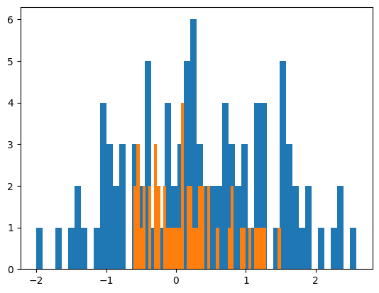
(1.1784111573186231, 0.2405408094645379)a = np.random.normal(0.5, 1, (100,3))
b = np.random.normal(0.5, 1, (50,))
kstest(a,b)(0.08333333333333333, 0.9110379107919119)a = np.random.normal(0.5, 1, (100,3))
b = np.random.normal(0.15, .5, (50,))
kstest(a,b)(0.32, 0.00023099502310042208)data1 = np.random.normal(0,1,(100, 5, 3))
data2 = np.random.normal(0,2,(100, 5, 3))
kstest(data1, data2, by_axis=1)([0.21666666666666667, 0.22333333333333333, 0.21, 0.16, 0.20666666666666667],
[1.4007759411179028e-06,
5.734627909208728e-07,
3.3273813118952403e-06,
0.0009055129810100997,
5.0749555303276145e-06])a = np.random.normal(0.5, 1, 100)
t = torch.normal(0.5, 1, (100, ))
tscore(a), tscore(t)(4.584959184776055, tensor(4.2273))scc
scc (a, b)
pcc
pcc (a, b)
remove_fn
remove_fn (fn, verbose=False)
Removes a file (fn) if exists
npsave
npsave (array_fn, array, verbose=True)
fn = 'data/remove_fn_test.npy'
a = np.zeros(1)
npsave(fn, a)
del a
np.load(fn, mmap_mode='r+')
remove_fn(fn, True)
remove_fn(fn, True)data/remove_fn_test.npy does not exist
saving data/remove_fn_test.npy...
...data/remove_fn_test.npy saved
data/remove_fn_test.npy file removed
data/remove_fn_test.npy does not existpermute_2D
permute_2D (array, axis=None)
Permute rows or columns in an array. This can be used, for example, in feature permutation
s = np.arange(100 * 50).reshape(100, 50)
test_eq(permute_2D(s, axis=0).mean(0), s.mean(0))
test_ne(permute_2D(s, axis=0), s)
test_eq(permute_2D(s, axis=1).mean(1), s.mean(1))
test_ne(permute_2D(s, axis=1), s)
test_ne(permute_2D(s), s)random_half_normal_tensor
random_half_normal_tensor (shape=1, device=None)
Returns a tensor of a predefined shape between 0 and 1 with a half-normal distribution
random_normal_tensor
random_normal_tensor (shape=1, device=None)
Returns a tensor of a predefined shape between -1 and 1 with a normal distribution
random_half_normal
random_half_normal ()
Returns a number between 0 and 1 with a half-normal distribution
random_normal
random_normal ()
Returns a number between -1 and 1 with a normal distribution
fig2buf
fig2buf (fig)
get_plot_fig
get_plot_fig (size=None, dpi=100)
default_dpi
default_dpi ()
default_dpi()100plot_scatter
plot_scatter (x, y, deg=1)
a = np.random.rand(100)
b = np.random.rand(100)**2
plot_scatter(a, b)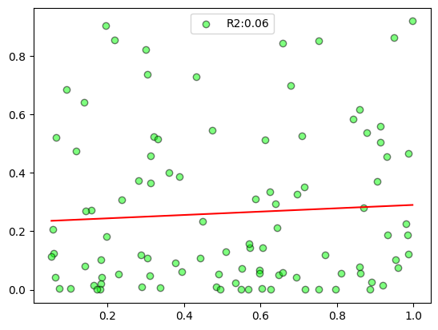
get_idxs
get_idxs (o, aList)
a = random_shuffle(np.arange(100, 200))
b = np.random.choice(a, 10, False)
idxs = get_idxs(a, b)
test_eq(a[idxs], b)apply_cmap
apply_cmap (o, cmap)
a = np.random.rand(16, 1, 40, 50)
s = L(a.shape)
s[1] = 3
test_eq(L(apply_cmap(a, 'viridis').shape), s)
s[0] = 1
a = np.random.rand(1, 40, 50)
test_eq(L(apply_cmap(a, 'viridis').shape), s)torch_tile
torch_tile (a, n_tile, dim=0)
test_eq(torch_tile(torch.arange(2), 3), tensor([0, 1, 0, 1, 0, 1]))to_tsfresh_df
to_tsfresh_df (ts)
Prepares a time series (Tensor/ np.ndarray) to be used as a tsfresh dataset to allow feature extraction
ts = torch.rand(16, 3, 20)
a = to_tsfresh_df(ts)
ts = ts.numpy()
b = to_tsfresh_df(ts)scorr
scorr (a, b)
pcorr
pcorr (a, b)
torch_diff
torch_diff (t, lag=1, pad=True, append=0)
t = torch.arange(24).reshape(2,3,4)
test_eq(torch_diff(t, 1)[..., 1:].float().mean(), 1.)
test_eq(torch_diff(t, 2)[..., 2:].float().mean(), 2.)torch_clamp
torch_clamp (o, min=None, max=None)
Clamp torch.Tensor using 1 or multiple dimensions
get_percentile
get_percentile (o, percentile, axis=None)
clip_outliers
clip_outliers (o, axis=None)
get_outliers_IQR
get_outliers_IQR (o, axis=None, quantile_range=(25.0, 75.0))
t = torch.randn(2,3,100)
test_eq(type(get_outliers_IQR(t, -1)[0]), torch.Tensor)
a = t.numpy()
test_eq(type(get_outliers_IQR(a, -1)[0]), np.ndarray)
test_close(get_percentile(t, 25).numpy(), get_percentile(a, 25))get_robustscale_params
get_robustscale_params (o, sel_vars=None, not_sel_vars=None, by_var=True, percentiles=(25, 75), eps=1e-06)
Calculates median and inter-quartile range required to robust scaler inputs
a = np.random.rand(16, 3, 100)
a[a>.8] = np.nan
median, IQR = get_robustscale_params(a, by_var=True, percentiles=(25, 75))
a_scaled = (a - median) / IQR
test_eq(a.shape, a_scaled.shape)
test_eq(np.isnan(median).sum(),0)
test_eq(np.isnan(IQR).sum(),0)
test_eq(np.isnan(a), np.isnan(a_scaled))torch_slice_by_dim
torch_slice_by_dim (t, index, dim=-1, **kwargs)
t = torch.rand(5, 3)
index = torch.randint(0, 3, (5, 1))
# index = [[0, 2], [0, 1], [1, 2], [0, 2], [0, 1]]
torch_slice_by_dim(t, index)tensor([[0.2770],
[0.4482],
[0.7977],
[0.9300],
[0.5764]])torch_nanstd
torch_nanstd (o, dim=None, keepdim=False)
There’s currently no torch.nanstd function
torch_nanmean
torch_nanmean (o, dim=None, keepdim=False)
There’s currently no torch.nanmean function
t = torch.rand(1000)
t[:100] = float('nan')
assert torch_nanmean(t).item() > 0concat
concat (*ls, dim=0)
Concatenate tensors, arrays, lists, or tuples by a dimension
reduce_memory_usage
reduce_memory_usage (df)
cls_name
cls_name (o)
test_eq(cls_name(timer), 'Timer')rotate_axis2
rotate_axis2 (o, steps=1)
rotate_axis1
rotate_axis1 (o, steps=1)
rotate_axis0
rotate_axis0 (o, steps=1)
random_roll3d
random_roll3d (o, axis=(), replace=False)
Randomly rolls a 3D object along the indicated axes This solution is based on https://stackoverflow.com/questions/20360675/roll-rows-of-a-matrix-independently
random_roll2d
random_roll2d (o, axis=(), replace=False)
Rolls a 2D object on the indicated axis This solution is based on https://stackoverflow.com/questions/20360675/roll-rows-of-a-matrix-independently
roll3d
roll3d (o, roll1:Union[NoneType,list,int]=None, roll2:Union[NoneType,list,int]=None, roll3:Union[NoneType,list,int]=None)
Rolls a 3D object on the indicated axis This solution is based on https://stackoverflow.com/questions/20360675/roll-rows-of-a-matrix-independently
roll2d
roll2d (o, roll1:Union[NoneType,list,int]=None, roll2:Union[NoneType,list,int]=None)
Rolls a 2D object on the indicated axis This solution is based on https://stackoverflow.com/questions/20360675/roll-rows-of-a-matrix-independently
a = np.tile(np.arange(10), 3).reshape(3, 10) * np.array([1, 10, 100]).reshape(-1, 1)
aarray([[ 0, 1, 2, 3, 4, 5, 6, 7, 8, 9],
[ 0, 10, 20, 30, 40, 50, 60, 70, 80, 90],
[ 0, 100, 200, 300, 400, 500, 600, 700, 800, 900]])roll2d(a, roll1=[2, 1, 0])array([[ 0, 100, 200, 300, 400, 500, 600, 700, 800, 900],
[ 0, 10, 20, 30, 40, 50, 60, 70, 80, 90],
[ 0, 1, 2, 3, 4, 5, 6, 7, 8, 9]])roll2d(a, roll2=3)array([[ 7, 8, 9, 0, 1, 2, 3, 4, 5, 6],
[ 70, 80, 90, 0, 10, 20, 30, 40, 50, 60],
[700, 800, 900, 0, 100, 200, 300, 400, 500, 600]])o = torch.arange(24).reshape(2,3,4)
test_eq(rotate_axis0(o)[1], o[0])
test_eq(rotate_axis1(o)[:,1], o[:,0])
test_eq(rotate_axis2(o)[...,1], o[...,0])chunks_calculator
chunks_calculator (shape, dtype='float32', n_bytes=1073741824)
Function to calculate chunks for a given size of n_bytes (default = 1024**3 == 1GB). It guarantees > 50% of the chunk will be filled
shape = (1_000, 10, 1000)
dtype = 'float32'
test_eq(chunks_calculator(shape, dtype), False)
shape = (54684, 10, 1000)
dtype = 'float32'
test_eq(chunks_calculator(shape, dtype), (27342, -1, -1))assign_in_chunks
assign_in_chunks (a, b, chunksize='auto', inplace=True, verbose=True)
Assigns values in b to an array-like object a using chunks to avoid memory overload. The resulting a retains it’s dtype and share it’s memory. a: array-like object b: may be an integer, float, str, ‘rand’ (for random data), or another array like object. chunksize: is the size of chunks. If ‘auto’ chunks will have around 1GB each.
a = np.random.rand(10,3,4).astype('float32')
a_dtype = a.dtype
a_id = id(a)
b = np.random.rand(10,3,4).astype('float64')
assign_in_chunks(a, b, chunksize=2, inplace=True, verbose=True)
test_close(a, b)
test_eq(a.dtype, a_dtype)
test_eq(id(a), a_id)
a = np.random.rand(10,3,4).astype('float32')
a_dtype = a.dtype
a_id = id(a)
b = 1
assign_in_chunks(a, b, chunksize=2, inplace=True, verbose=True)
test_eq(a, np.ones_like(a).astype(a.dtype))
test_eq(a.dtype, a_dtype)
test_eq(id(a), a_id)
a = np.random.rand(10,3,4).astype('float32')
a_dtype = a.dtype
a_id = id(a)
b = 0.5
assign_in_chunks(a, b, chunksize=2, inplace=True, verbose=True)
test_eq(a.dtype, a_dtype)
test_eq(id(a), a_id)
a = np.random.rand(10,3,4).astype('float32')
a_dtype = a.dtype
a_id = id(a)
b = 'rand'
assign_in_chunks(a, b, chunksize=2, inplace=True, verbose=True)
test_eq(a.dtype, a_dtype)
test_eq(id(a), a_id)a = np.random.rand(10,3,4).astype('float32')
b = np.random.rand(10,3,4).astype('float64')
c = assign_in_chunks(a, b, chunksize=2, inplace=False, verbose=True)
test_close(c, b)
test_eq(a.dtype, c.dtype)
test_eq(is_memory_shared(a, c), True)
a = np.random.rand(10,3,4).astype('float32')
b = 1
c = assign_in_chunks(a, b, chunksize=2, inplace=False, verbose=True)
test_eq(a, np.ones_like(a).astype(a.dtype))
test_eq(a.dtype, c.dtype)
test_eq(is_memory_shared(a, c), True)
a = np.random.rand(10,3,4).astype('float32')
b = 0.5
c = assign_in_chunks(a, b, chunksize=2, inplace=False, verbose=True)
test_eq(a.dtype, c.dtype)
test_eq(is_memory_shared(a, c), True)
a = np.random.rand(10,3,4).astype('float32')
b = 'rand'
c = assign_in_chunks(a, b, chunksize=2, inplace=False, verbose=True)
test_eq(a.dtype, c.dtype)
test_eq(is_memory_shared(a, c), True)create_array
create_array (shape, fname=None, path='./data', on_disk=True, dtype='float32', mode='r+', fill_value='rand', chunksize='auto', verbose=True, **kwargs)
mode: ‘r’: Open existing file for reading only. ‘r+’: Open existing file for reading and writing. ‘w+’: Create or overwrite existing file for reading and writing. ‘c’: Copy-on-write: assignments affect data in memory, but changes are not saved to disk. The file on disk is read-only. fill_value: ‘rand’ (for random numbers), int or float chunksize = ‘auto’ to calculate chunks of 1GB, or any integer (for a given number of samples)
fname = 'X_on_disk'
shape = (100, 10, 10)
X = create_array(shape, fname, on_disk=True, mode='r+')
test_ne(abs(X).sum(), 0)
os.remove(X.filename)
del Xauto chunksize: 100fname = 'X_on_disk'
shape = (100, 10, 10)
X = create_empty_array(shape, fname, on_disk=True, mode='r+')
test_eq(abs(X).sum(), 0)
chunksize = 10
pbar = progress_bar(range(math.ceil(len(X) / chunksize)), leave=False)
start = 0
for i in pbar:
end = min(start + chunksize, len(X))
partial_data = np.random.rand(end - start, X.shape[1] , X.shape[2])
X[start:end] = partial_data
start = end
del partial_data
gc.collect()
filename = X.filename
del X
X = np.load(filename, mmap_mode='r+')
test_eq((X == 0).sum(), 0)
test_eq(X.shape, shape)
os.remove(X.filename)
del Xnp_load_compressed
np_load_compressed (fname=None, path='./data', **kwargs)
np_save_compressed
np_save_compressed (arr, fname=None, path='./data', verbose=False, **kwargs)
X1 = np.random.rand(10)
np_save_compressed(X1, 'X_comp', path='./data')
X2 = np_load_compressed('X_comp')
test_eq(X1, X2)np2memmap
np2memmap (arr, fname=None, path='./data', dtype='float32', mode='c', **kwargs)
Function that turns an ndarray into a memmap ndarray mode: ‘r’: Open existing file for reading only. ‘r+’: Open existing file for reading and writing. ‘w+’: Create or overwrite existing file for reading and writing. ‘c’: Copy-on-write: assignments affect data in memory, but changes are not saved to disk. The file on disk is read-only.
X1 = np.random.rand(10)
X2 = np2memmap(X1, 'X1_test')
test_eq(X1, X2)
test_ne(type(X1), type(X2))torch_mean_groupby
torch_mean_groupby (o, idxs)
Computes torch mean along axis 0 grouped by the idxs. Need to ensure that idxs have the same order as o
o = torch.arange(6*2*3).reshape(6, 2, 3).float()
idxs = np.array([[0,1,2,3], [2,3]], dtype=object)
output = torch_mean_groupby(o, idxs)
test_eq(o[:2], output[:2])
test_eq(o[2:4].mean(0), output[2])
test_eq(o[4:6].mean(0), output[3])torch_flip
torch_flip (t, dims=-1)
t = torch.randn(2, 3, 4)
test_eq(torch.flip(t, (2,)), torch_flip(t, dims=-1))torch_masked_to_num
torch_masked_to_num (o, mask, num=0, inplace=False)
torch_nan_to_num
torch_nan_to_num (o, num=0, inplace=False)
x = torch.rand(2, 4, 6)
x[:, :3][x[:, :3] < .5] = np.nan
nan_values = torch.isnan(x).sum()
y = torch_nan_to_num(x[:, :3], inplace=False)
test_eq(torch.isnan(y).sum(), 0)
test_eq(torch.isnan(x).sum(), nan_values)
torch_nan_to_num(x[:, :3], inplace=True)
test_eq(torch.isnan(x).sum(), 0)x = torch.rand(2, 4, 6)
mask = x[:, :3] > .5
x[:, :3] = torch_masked_to_num(x[:, :3], mask, num=0, inplace=False)
test_eq(x[:, :3][mask].sum(), 0)x = torch.rand(2, 4, 6)
mask = x[:, :3] > .5
torch_masked_to_num(x[:, :3], mask, num=0, inplace=True)
test_eq(x[:, :3][mask].sum(), 0)mpl_trend
mpl_trend (x, y, deg=1)
x = np.sort(np.random.randint(0, 100, 100)/10)
y = np.random.rand(100) + np.linspace(0, 10, 100)
trend = mpl_trend(x, y)
plt.scatter(x, y)
plt.plot(x, trend, 'r')
plt.show()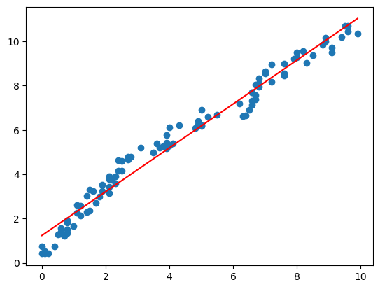
array2digits
array2digits (o, n_digits=None, normalize=True)
int2digits
int2digits (o, n_digits=None, normalize=True)
o = -9645
test_eq(int2digits(o, 6), np.array([ 0, 0, -.9, -.6, -.4, -.5]))
a = np.random.randint(-1000, 1000, 10)
test_eq(array2digits(a,5).shape, (10,5))sincos_encoding
sincos_encoding (seq_len, device=None, to_np=False)
sin, cos = sincos_encoding(100)
plt.plot(sin.cpu().numpy())
plt.plot(cos.cpu().numpy())
plt.show()
linear_encoding
linear_encoding (seq_len, device=None, to_np=False, lin_range=(-1, 1))
lin = linear_encoding(100)
plt.plot(lin.cpu().numpy())
plt.show()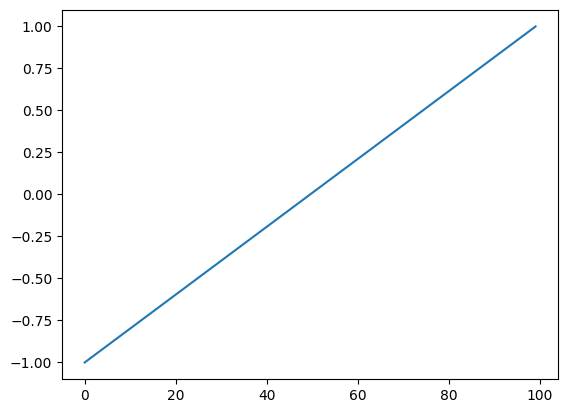
encode_positions
encode_positions (pos_arr, min_val=None, max_val=None, linear=False, lin_range=(-1, 1))
Encodes an array with positions using a linear or sincos methods
n_samples = 10
length = 500
_a = []
for i in range(n_samples):
a = np.arange(-4000, 4000, 10)
mask = np.random.rand(len(a)) > .5
a = a[mask]
a = np.concatenate([a, np.array([np.nan] * (length - len(a)))])
_a.append(a.reshape(-1,1))
a = np.concatenate(_a, -1).transpose(1,0)
sin, cos = encode_positions(a, linear=False)
test_eq(a.shape, (n_samples, length))
test_eq(sin.shape, (n_samples, length))
test_eq(cos.shape, (n_samples, length))
plt.plot(sin.T)
plt.plot(cos.T)
plt.xlim(0, 500)
plt.show()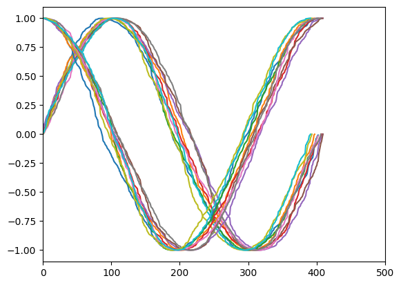
n_samples = 10
length = 500
_a = []
for i in range(n_samples):
a = np.arange(-4000, 4000, 10)
mask = np.random.rand(len(a)) > .5
a = a[mask]
a = np.concatenate([a, np.array([np.nan] * (length - len(a)))])
_a.append(a.reshape(-1,1))
a = np.concatenate(_a, -1).transpose(1,0)
lin = encode_positions(a, linear=True)
test_eq(a.shape, (n_samples, length))
test_eq(lin.shape, (n_samples, length))
plt.plot(lin.T)
plt.xlim(0, 500)
plt.show()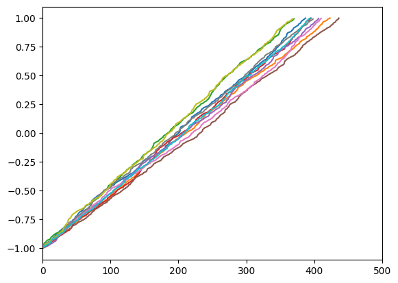
sort_generator
sort_generator (generator, bs)
generator = (i for i in np.random.permutation(np.arange(1000000)).tolist())
l = list(sort_generator(generator, 512))
test_eq(l[:512], sorted(l[:512]))get_subset_dict
get_subset_dict (d, keys)
keys = string.ascii_lowercase
values = np.arange(len(keys))
d = {k:v for k,v in zip(keys,values)}
test_eq(get_subset_dict(d, ['a', 'k', 'j', 'e']), {'a': 0, 'k': 10, 'j': 9, 'e': 4})remove_dir
remove_dir (directory, verbose=True)
create_dir
create_dir (directory, verbose=True)
path = "wandb3/wandb2/wandb"
create_dir(path)
assert Path(path).exists()
paths = ["wandb3/wandb2/wandb", "wandb3/wandb2", "wandb"]
remove_dir(paths)
for p in paths:
assert not Path(p).exists()
path = "wandb3"
assert Path(path).exists()
remove_dir(path)
assert not Path(path).exists()wandb3/wandb2/wandb directory created.
wandb3/wandb2/wandb directory removed.
wandb3/wandb2 directory removed.
wandb directory doesn't exist.
wandb3 directory removed.create_dir('./test')test directory created.a = 5
def fn(b): return a + bWriting ./test/mod_dev.pyfname = "./test/mod_dev.py"
while True:
if fname[0] in "/ .": fname = fname.split(fname[0], 1)[1]
else: break
if '/' in fname and fname.rsplit('/', 1)[0] not in sys.path: sys.path.append(fname.rsplit('/', 1)[0])
mod = import_file_as_module(fname)
test_eq(mod.fn(3), 8)
sys.path = sys.path[:-1]
remove_dir('./test/')test directory removed.named_partial
named_partial (name, func, *args, **kwargs)
Create a partial function with a name
def add_1(x, add=1): return x+add
test_eq(add_1(1), 2)
add_2 = partial(add_1, add=2)
test_eq(add_2(2), 4)
test_ne(str(add_2), "add_2")
add_2 = named_partial('add_2', add_1, add=2)
test_eq(add_2(2), 4)
test_eq(str(add_2), "add_2")
class _A():
def __init__(self, add=1): self.add = add
def __call__(self, x): return x + self.add
test_eq(_A()(1), 2)
_A2 = partial(_A, add=2)
test_eq(_A2()(1), 3)
test_ne(str(_A2), '_A2')
_A2 = named_partial('_A2', _A, add=2)
test_eq(_A2()(1), 3)
test_eq(str(_A2), '_A2')yaml2dict
yaml2dict (fname)
program: wandb_scripts/train_script.py # (required) Path to training script.
method: bayes # (required) Specify the search strategy: grid, random or bayes
parameters: # (required) Specify parameters bounds to search.
bs:
values: [32, 64, 128]
depth:
values: [3, 6, 9, 12]
fc_dropout:
distribution: uniform
min: 0.
max: 0.5
lr_max:
values: [0.001, 0.003, 0.01, 0.03, 0.1]
n_epoch:
values: [10, 15, 20]
nb_filters:
values: [32, 64, 128]
name: LSST_sweep_01
metric:
name: accuracy # This must match one of the metrics in the training script
goal: maximize
early_terminate:
type: hyperband
min_iter: 3
project: LSST_wandb_hpoWriting sweep_config.yamlfname = "sweep_config.yaml"
sweep_config = yaml2dict(fname)
print(sweep_config)
test_eq(sweep_config.method, 'bayes')
test_eq(sweep_config['metric'], {'name': 'accuracy', 'goal': 'maximize'})
os.remove(fname){'program': 'wandb_scripts/train_script.py', 'method': 'bayes', 'parameters': {'bs': {'values': [32, 64, 128]}, 'depth': {'values': [3, 6, 9, 12]}, 'fc_dropout': {'distribution': 'uniform', 'min': 0.0, 'max': 0.5}, 'lr_max': {'values': [0.001, 0.003, 0.01, 0.03, 0.1]}, 'n_epoch': {'values': [10, 15, 20]}, 'nb_filters': {'values': [32, 64, 128]}}, 'name': 'LSST_sweep_01', 'metric': {'name': 'accuracy', 'goal': 'maximize'}, 'early_terminate': {'type': 'hyperband', 'min_iter': 3}, 'project': 'LSST_wandb_hpo'}get_cat_cols
get_cat_cols (df)
get_cont_cols
get_cont_cols (df)
str2index
str2index (o)
str2list
str2list (o)
map_array
map_array (arr, dim=1)
get_mapping
get_mapping (arr, dim=1, return_counts=False)
a = np.asarray(alphabet[np.random.randint(0,15,30)]).reshape(10,3)
b = np.asarray(ALPHABET[np.random.randint(6,10,30)]).reshape(10,3)
x = concat(a,b,dim=1)
maps, counts = get_mapping(x, dim=1, return_counts=True)
x, maps, counts(array([['j', 'b', 'j', 'H', 'G', 'G'],
['e', 'k', 'k', 'G', 'J', 'H'],
['k', 'b', 'f', 'I', 'I', 'I'],
['n', 'j', 'm', 'G', 'G', 'G'],
['h', 'n', 'o', 'G', 'H', 'H'],
['a', 'a', 'd', 'J', 'G', 'I'],
['k', 'n', 'd', 'G', 'I', 'J'],
['l', 'l', 'n', 'G', 'I', 'G'],
['f', 'o', 'h', 'H', 'H', 'J'],
['f', 'i', 'f', 'J', 'G', 'H']], dtype='<U1'),
[(#8) ['a','e','f','h','j','k','l','n'],
(#8) ['a','b','i','j','k','l','n','o'],
(#8) ['d','f','h','j','k','m','n','o'],
(#4) ['G','H','I','J'],
(#4) ['G','H','I','J'],
(#4) ['G','H','I','J']],
[8, 8, 8, 4, 4, 4])x = np.asarray(alphabet[np.random.randint(0,15,30)]).reshape(10,3)
x, map_array(x), map_array(x, 1)(array([['g', 'g', 'j'],
['f', 'n', 'k'],
['n', 'h', 'm'],
['d', 'm', 'i'],
['a', 'm', 'g'],
['k', 'e', 'm'],
['j', 'o', 'm'],
['d', 'f', 'f'],
['o', 'm', 'b'],
['o', 'c', 'b']], dtype='<U1'),
array([[3, 3, 4],
[2, 6, 5],
[6, 4, 6],
[1, 5, 3],
[0, 5, 2],
[5, 1, 6],
[4, 7, 6],
[1, 2, 1],
[7, 5, 0],
[7, 0, 0]]),
array([[3, 3, 4],
[2, 6, 5],
[6, 4, 6],
[1, 5, 3],
[0, 5, 2],
[5, 1, 6],
[4, 7, 6],
[1, 2, 1],
[7, 5, 0],
[7, 0, 0]]))log_tfm
log_tfm (o, inplace=False)
Log transforms an array-like object with positive and/or negative values
arr = np.asarray([-1000, -100, -10, -1, 0, 1, 10, 100, 1000]).astype(float)
plt.plot(arr, log_tfm(arr, False))
plt.show()
t = tensor([-1000, -100, -10, -1, 0, 1, 10, 100, 1000]).float()
plt.plot(t, log_tfm(t, False))
plt.show()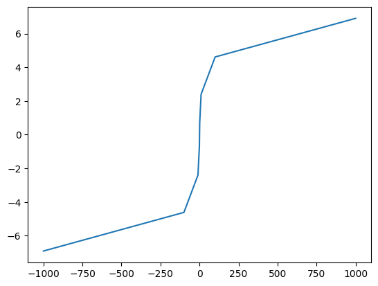
to_sincos_time
to_sincos_time (arr, max_value)
arr = np.sort(np.random.rand(100) * 5)
arr_sin, arr_cos = to_sincos_time(arr, 5)
plt.scatter(arr, arr_sin)
plt.scatter(arr, arr_cos)
plt.show()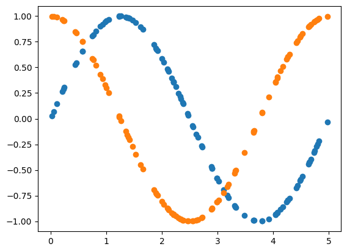
plot_feature_dist
plot_feature_dist (X, percentiles=[0, 0.1, 0.5, 1, 5, 10, 25, 50, 75, 90, 95, 99, 99.5, 99.9, 100])
arr = np.random.rand(10, 3, 100)
plot_feature_dist(arr, percentiles=[0,0.1,0.5,1,5,10,25,50,75,90,95,99,99.5,99.9,100])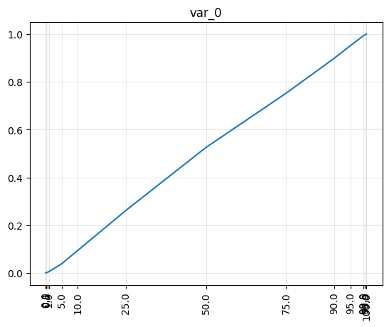
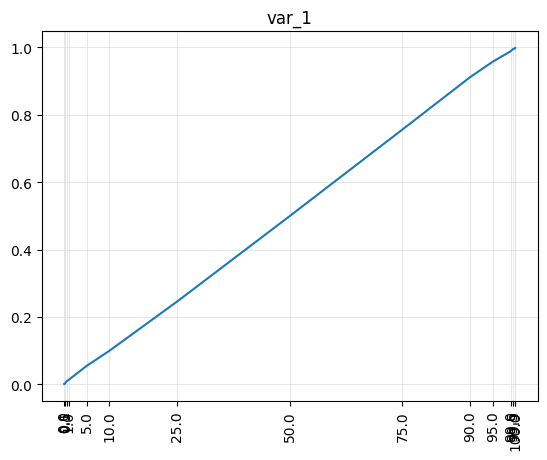
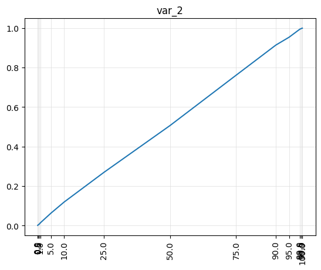
rolling_moving_average
rolling_moving_average (o, window=2)
a = np.arange(60).reshape(2,3,10).astype(float)
t = torch.arange(60).reshape(2,3,10).float()
test_close(rolling_moving_average(a, window=3), rolling_moving_average(t, window=3).numpy())
print(t)
print(rolling_moving_average(t, window=3))tensor([[[ 0., 1., 2., 3., 4., 5., 6., 7., 8., 9.],
[10., 11., 12., 13., 14., 15., 16., 17., 18., 19.],
[20., 21., 22., 23., 24., 25., 26., 27., 28., 29.]],
[[30., 31., 32., 33., 34., 35., 36., 37., 38., 39.],
[40., 41., 42., 43., 44., 45., 46., 47., 48., 49.],
[50., 51., 52., 53., 54., 55., 56., 57., 58., 59.]]])
tensor([[[ 0.0000, 0.5000, 1.0000, 2.0000, 3.0000, 4.0000, 5.0000,
6.0000, 7.0000, 8.0000],
[10.0000, 10.5000, 11.0000, 12.0000, 13.0000, 14.0000, 15.0000,
16.0000, 17.0000, 18.0000],
[20.0000, 20.5000, 21.0000, 22.0000, 23.0000, 24.0000, 25.0000,
26.0000, 27.0000, 28.0000]],
[[30.0000, 30.5000, 31.0000, 32.0000, 33.0000, 34.0000, 35.0000,
36.0000, 37.0000, 38.0000],
[40.0000, 40.5000, 41.0000, 42.0000, 43.0000, 44.0000, 45.0000,
46.0000, 47.0000, 48.0000],
[50.0000, 50.5000, 51.0000, 52.0000, 53.0000, 54.0000, 55.0000,
56.0000, 57.0000, 58.0000]]])fbfill_sequence
fbfill_sequence (o)
Forward and backward fills an array-like object alongside sequence dimension
bfill_sequence
bfill_sequence (o)
Backward fills an array-like object alongside sequence dimension
ffill_sequence
ffill_sequence (o)
Forward fills an array-like object alongside sequence dimension
a = np.arange(80).reshape(2, 4, 10).astype(float)
mask = np.random.rand(*a.shape)
a[mask > .8] = np.nan
t = torch.from_numpy(a)
ttensor([[[ 0., 1., 2., 3., 4., 5., 6., nan, 8., 9.],
[10., 11., 12., 13., 14., 15., 16., 17., nan, nan],
[nan, nan, 22., nan, 24., 25., 26., 27., 28., 29.],
[nan, 31., nan, 33., 34., 35., 36., nan, nan, 39.]],
[[40., nan, 42., 43., 44., 45., 46., 47., 48., 49.],
[50., nan, 52., 53., nan, 55., 56., 57., 58., nan],
[nan, 61., 62., 63., 64., nan, 66., 67., 68., 69.],
[nan, nan, 72., 73., 74., 75., nan, 77., 78., nan]]],
dtype=torch.float64)# forward fill
filled_a = ffill_sequence(a)
print(filled_a)
m = np.isnan(filled_a)
test_eq(filled_a[~m], ffill_sequence(t).numpy()[~m])[[[ 0. 1. 2. 3. 4. 5. 6. 6. 8. 9.]
[10. 11. 12. 13. 14. 15. 16. 17. 17. 17.]
[nan nan 22. 22. 24. 25. 26. 27. 28. 29.]
[nan 31. 31. 33. 34. 35. 36. 36. 36. 39.]]
[[40. 40. 42. 43. 44. 45. 46. 47. 48. 49.]
[50. 50. 52. 53. 53. 55. 56. 57. 58. 58.]
[nan 61. 62. 63. 64. 64. 66. 67. 68. 69.]
[nan nan 72. 73. 74. 75. 75. 77. 78. 78.]]]# backward fill
filled_a = bfill_sequence(a)
print(filled_a)
m = np.isnan(filled_a)
test_eq(filled_a[~m], bfill_sequence(t).numpy()[~m])[[[ 0. 1. 2. 3. 4. 5. 6. 8. 8. 9.]
[10. 11. 12. 13. 14. 15. 16. 17. nan nan]
[22. 22. 22. 24. 24. 25. 26. 27. 28. 29.]
[31. 31. 33. 33. 34. 35. 36. 39. 39. 39.]]
[[40. 42. 42. 43. 44. 45. 46. 47. 48. 49.]
[50. 52. 52. 53. 55. 55. 56. 57. 58. nan]
[61. 61. 62. 63. 64. 66. 66. 67. 68. 69.]
[72. 72. 72. 73. 74. 75. 77. 77. 78. nan]]]# forward & backward fill
filled_a = fbfill_sequence(a)
print(filled_a)
m = np.isnan(filled_a)
test_eq(filled_a[~m], fbfill_sequence(t).numpy()[~m])[[[ 0. 1. 2. 3. 4. 5. 6. 6. 8. 9.]
[10. 11. 12. 13. 14. 15. 16. 17. 17. 17.]
[22. 22. 22. 22. 24. 25. 26. 27. 28. 29.]
[31. 31. 31. 33. 34. 35. 36. 36. 36. 39.]]
[[40. 40. 42. 43. 44. 45. 46. 47. 48. 49.]
[50. 50. 52. 53. 53. 55. 56. 57. 58. 58.]
[61. 61. 62. 63. 64. 64. 66. 67. 68. 69.]
[72. 72. 72. 73. 74. 75. 75. 77. 78. 78.]]]dummify
dummify (o:Union[numpy.ndarray,torch.Tensor], by_var:bool=True, inplace:bool=False, skip:Optional[list]=None, random_state=None)
Shuffles an array-like object along all dimensions or dimension 1 (variables) if by_var is True.
arr = np.random.rand(2,3,10)
arr_original = arr.copy()
dummy_arr = dummify(arr)
test_ne(arr_original, dummy_arr)
test_eq(arr_original, arr)
dummify(arr, inplace=True)
test_ne(arr_original, arr)t = torch.rand(2,3,10)
t_original = t.clone()
dummy_t = dummify(t)
test_ne(t_original, dummy_t)
test_eq(t_original, t)
dummify(t, inplace=True)
test_ne(t_original, t)shuffle_along_axis
shuffle_along_axis (o, axis=-1, random_state=None)
X = np.arange(60).reshape(2,3,10) + 10
X_shuffled = shuffle_along_axis(X,(0, -1), random_state=23)
test_eq(X_shuffled, np.array([[[13, 15, 41, 14, 40, 49, 18, 42, 47, 46],
[28, 56, 53, 50, 52, 25, 24, 57, 51, 59],
[34, 30, 38, 35, 69, 66, 63, 67, 61, 62]],
[[19, 10, 11, 16, 43, 12, 17, 48, 45, 44],
[23, 20, 26, 22, 21, 27, 58, 29, 54, 55],
[36, 31, 39, 60, 33, 68, 37, 32, 65, 64]]]))analyze_array
analyze_array (o, bins=100, density=False, feature_names=None, clip_outliers_plot=False, quantile_range=(25.0, 75.0), percentiles=[1, 25, 50, 75, 99], text_len=12, figsize=(10, 6))
analyze_feature
analyze_feature (feature, bins=100, density=False, feature_name=None, clip_outliers_plot=False, quantile_range=(25.0, 75.0), percentiles=[1, 25, 50, 75, 99], text_len=12, figsize=(10, 6))
x = np.random.normal(size=(1000))
analyze_array(x) array shape: (1000,)
dtype: float64
nan values: 0.0%
max: 3.137035754147785
1: -2.265136762541489
25: -0.7704682535293808
50: -0.05691499744372562
75: 0.6308870334033057
99: 2.1327776024135403
min: -3.0789286262271416
outlier min: -2.8725011839284105
outlier max: 2.7329199638023356
outliers: 0.6%
mean: -0.05758672633619717
std: 0.9965460593961707
normal dist: True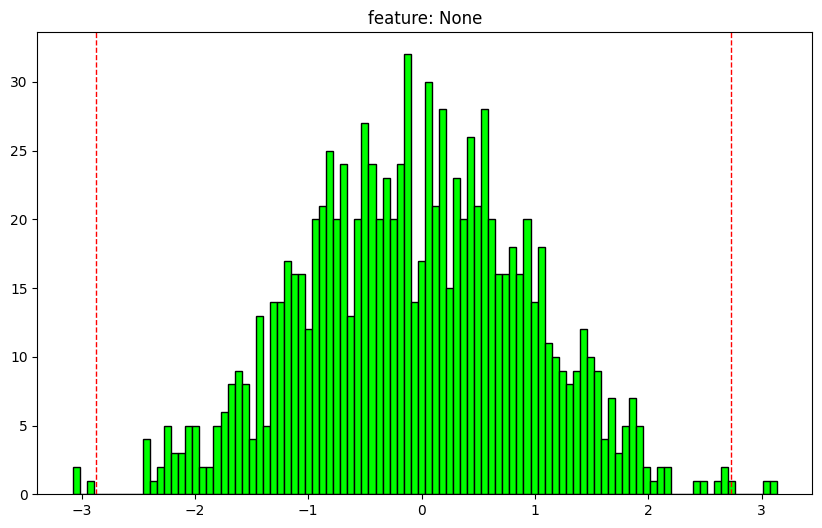
x1 = np.random.normal(size=(1000,2))
x2 = np.random.normal(3, 5, size=(1000,2))
x = x1 + x2
analyze_array(x) array shape: (1000, 2)
0 feature: 0
dtype: float64
nan values: 0.0%
max: 16.73984264237124
1: -8.723473567460799
25: -0.17793796541912255
50: 3.274863767443181
75: 6.6907353625592885
99: 14.500914416198908
min: -11.577982938283466
outlier min: -10.48094795738674
outlier max: 16.993745354526904
outliers: 0.4%
mean: 3.169288154625591
std: 5.044150859017613
normal dist: True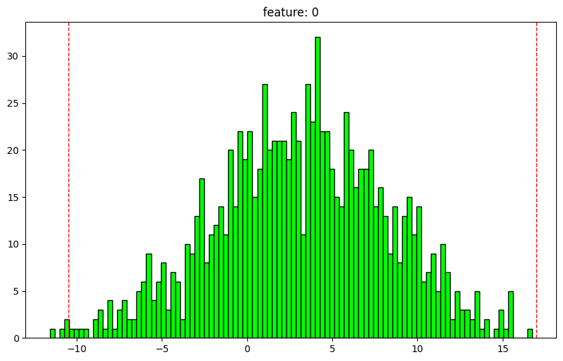
1 feature: 1
dtype: float64
nan values: 0.0%
max: 20.957127202590673
1: -8.824108128141859
25: -0.897728643391843
50: 2.8914228957756456
75: 6.259028902145111
99: 13.779579280779982
min: -13.663138311819605
outlier min: -11.632864961697274
outlier max: 16.99416522045054
outliers: 0.4%
mean: 2.82001817965573
std: 5.043842374595266
normal dist: True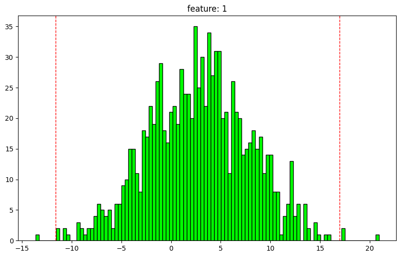
get_relpath
get_relpath (path)
split_in_chunks
split_in_chunks (o, chunksize, start=0, shuffle=False, drop_last=False)
a = np.arange(5, 15)
test_eq(split_in_chunks(a, 3, drop_last=False), [array([5, 6, 7]), array([ 8, 9, 10]), array([11, 12, 13]), array([14])])
test_eq(split_in_chunks(a, 3, drop_last=True), [array([5, 6, 7]), array([ 8, 9, 10]), array([11, 12, 13])])
test_eq(split_in_chunks(a, 3, start=2, drop_last=True), [array([7, 8, 9]), array([10, 11, 12])])load_object
load_object (file_path)
save_object
save_object (o, file_path, verbose=True)
split = np.arange(100)
save_object(split, file_path='data/test')
split2 = load_object('data/test.pkl')
test_eq(split, split2)data directory already exists.
ndarray saved as data/test.pklsplits = L([[[0,1,2,3,4], [5,6,7,8,9]],[[10,11,12,13,14], [15,16,17,18,19]]])
save_object(splits, file_path=Path('data/test'))
splits2 = load_object('data/test')
test_eq(splits, splits2)data directory already exists.
L saved as data/test.pklget_idxs_to_keep
get_idxs_to_keep (o, cond, crit='all', invert=False, axis=(1, 2), keepdims=False)
a = np.random.rand(100, 2, 10)
a[a > .95] = np.nan
idxs_to_keep = get_idxs_to_keep(a, np.isfinite)
if idxs_to_keep.size>0:
test_eq(np.isnan(a[idxs_to_keep]).sum(), 0)zerofy
zerofy (a, stride, keep=False)
Create copies of an array setting individual/ group values to zero
stride = 3
a = np.arange(2*5).reshape(2,5) + 1
zerofy(a, stride, keep=False)array([[[ 0., 0., 3., 4., 5.],
[ 6., 7., 8., 9., 10.]],
[[ 1., 2., 0., 0., 0.],
[ 6., 7., 8., 9., 10.]],
[[ 1., 2., 3., 4., 5.],
[ 0., 0., 8., 9., 10.]],
[[ 1., 2., 3., 4., 5.],
[ 6., 7., 0., 0., 0.]]])